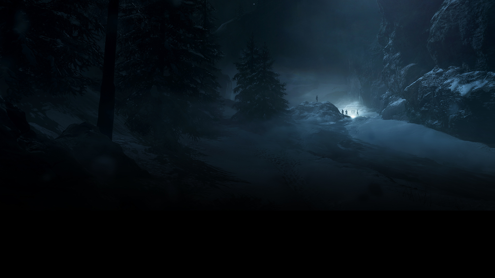

| Character | Solveig Fia Bjørnstad |
|---|---|
| Country | Norway Resistance |
| Location | Norway |
| Year | 1943 |
| Mission | Destroy German Heavy Water Facility |
Solveig Fia Bjørnstad adalah anggota perlawanan Norwegia yang berjuang melawan pendudukan Nazi di tanah kelahirannya.
Bersama ibunya, ia menjalankan misi berbahaya untuk menghancurkan fasilitas produksi Heavy Water milik Jerman, yang berpotensi digunakan untuk mengembangkan senjata mematikan.
Di tengah dinginnya salju Norwegia dan patroli musuh, perjuangan ini bukan hanya tentang kemenangan, tetapi juga tentang keluarga dan pengorbanan.
